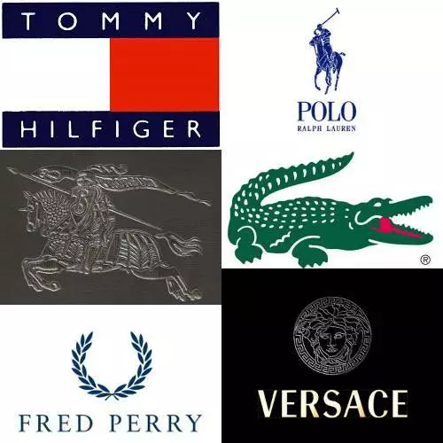
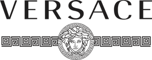

.png)


A todos nos gusta hacer alarde de nuestros atuendos. Si eres hombre o mujer, querrás vestirte elegante y asegurarte de que la gente elogie tu sentido del vestir y tu atuendo. Por supuesto, comprar ropa no es una broma, hay que buscar entre muchos factores. Desde tu tipo y forma de cuerpo hasta las mejores marcas de ropa, todo importa cuando se trata de elegir ropa para ti. La marca de la ropa recibe más atención que todo lo demás, ya que la marca de ropa determina el estilo y la calidad de la ropa y, en algún nivel, también su estatus.

Aunque hay cientos de miles de marcas presentes en el mundo, querrás gastar tu dinero en las mejores marcas de ropa, ¿verdad? Pero, ¿cómo determinará qué marca es la mejor marca de ropa? Bueno, es difícil elegir solo una marca como la mejor marca de ropa y es por eso que hemos decidido elegir las 5 mejores marcas de ropa para usted para 2023. Así que adelante, eche un vistazo a las siguientes marcas de ropa en las que puede comprar.
La primera marca de ropa que nos vino a la mente mientras buscábamos las mejores marcas de ropa no era
otra que Tommy Hilfiger. Esta es una de las marcas más populares entre los entusiastas de la moda y a todos les
encanta el diseño y la calidad de la ropa.
Esta es una marca estadounidense y es conocida popularmente por su ropa de moda rápida para mujeres, hombres y
niños. La marca se estableció en 1947 y se ha convertido en una marca de ropa a nivel mundial con presencia
en 74 países con más de 5000 tiendas.
La marca vende una amplia variedad de ropa y accesorios para que pueda encontrar fácilmente algo que haga lucir a la moda y con estilo, además de mantenerte cómodo. Diseñan inteligentemente su ropa teniendo en cuenta la tendencia. El rango de precios también es bastante amplio, por lo que puede encontrar fácilmente algo en su presupuesto pero un artículo premium. También puede comprar en su sitio web en línea.
En general, es una de las mejores marcas de ropa para buscar un gran atuendo y asegurar de tener algo de su gusto.
Esta es una marca francesa y es conocida popularmente por su ropa de moda rápida para mujeres, hombres y
niños. La marca se estableció en 1923 y se ha convertido en una marca de ropa a nivel mundial con presencia
en 74 países con más de 5000 tiendas.
La marca vende una amplia variedad de ropa y accesorios para que pueda encontrar fácilmente algo que haga lucir a la moda y con estilo, además de mantenerte cómodo. Diseñan inteligentemente su ropa teniendo en cuenta la tendencia. El rango de precios también es bastante amplio, por lo que puede encontrar fácilmente algo en su presupuesto pero un artículo premium. También puede comprar en su sitio web en línea.
En general, es una de las mejores marcas de ropa para buscar un gran atuendo y asegurar de tener algo de su gusto.
Esta es una de las marcas más populares entre los entusiastas de la moda y a todos les
encanta el diseño y la calidad de la ropa.
Esta es una marca inglesa y es conocida popularmente por su ropa de moda rápida para mujeres, hombres y
niños. La marca se estableció en 1947 y se ha convertido en una marca de ropa a nivel mundial con presencia
en 74 países con más de 5000 tiendas.
La marca vende una amplia variedad de ropa y accesorios para que pueda encontrar fácilmente algo que haga lucir a la moda y con estilo, además de mantenerte cómodo. Diseñan inteligentemente su ropa teniendo en cuenta la tendencia. El rango de precios también es bastante amplio, por lo que puede encontrar fácilmente algo en su presupuesto pero un artículo premium. También puede comprar en su sitio web en línea.
En general, es una de las mejores marcas de ropa para buscar un gran atuendo y asegurar de tener algo de su gusto.
Esta es una de las marcas más populares entre los entusiastas de la moda y a todos les
encanta el diseño y la calidad de la ropa.
Esta es una marca italiana y es conocida popularmente por su ropa de moda rápida para mujeres, hombres y
niños. La marca se estableció en 1967 y se ha convertido en una marca de ropa a nivel mundial con presencia
en 74 países con más de 400 tiendas.

La marca vende una amplia variedad de ropa y accesorios para que pueda encontrar fácilmente algo que haga lucir a la moda y con estilo, además de mantenerte cómodo. Diseñan inteligentemente su ropa teniendo en cuenta la tendencia. El rango de precios también es bastante amplio, por lo que puede encontrar fácilmente algo en su presupuesto pero un artículo premium. También puede comprar en su sitio web en línea.
En general, es una de las mejores marcas de ropa para buscar un gran atuendo y asegurar de tener algo de su gusto.
Esta es una de las marcas más populares entre los entusiastas de la moda y a todos les
encanta el diseño y la calidad de la ropa.
Esta es una marca sueca y es conocida popularmente por su ropa de moda rápida para mujeres, hombres y
niños.
La marca se estableció en 1947 y se ha convertido en una marca de ropa a nivel mundial con presencia
en 74 países con más de 5000 tiendas.
La marca vende una amplia variedad de ropa y accesorios para que pueda encontrar fácilmente algo que
haga lucir a la moda y con estilo, además de mantenerte cómodo. Diseñan inteligentemente su ropa
teniendo en cuenta la tendencia.
El rango de precios también es bastante amplio, por lo que puede
encontrar fácilmente algo en su presupuesto pero un artículo premium. También puede comprar en su sitio
web en línea.
En general, es una de las mejores marcas de ropa para buscar un gran atuendo y asegurar de tener algo de su gusto.